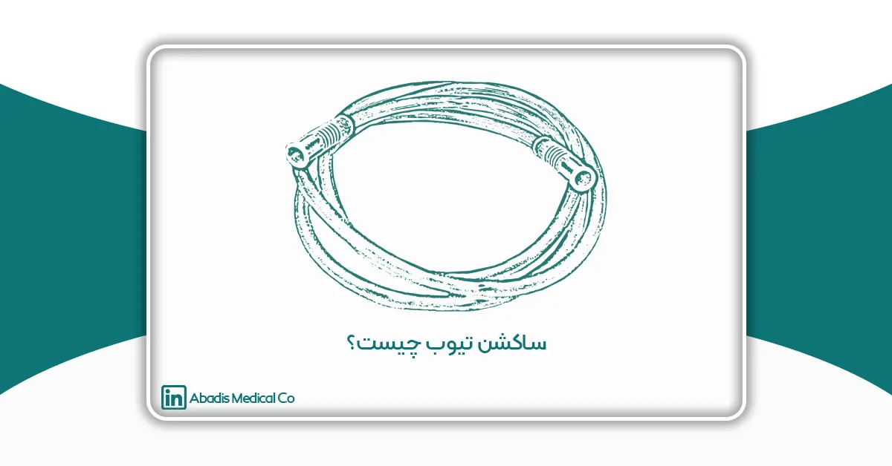
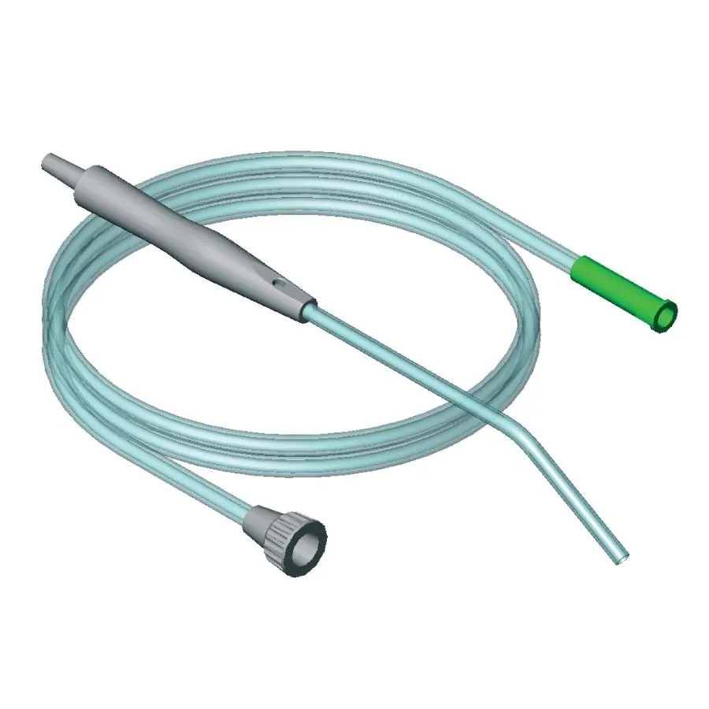
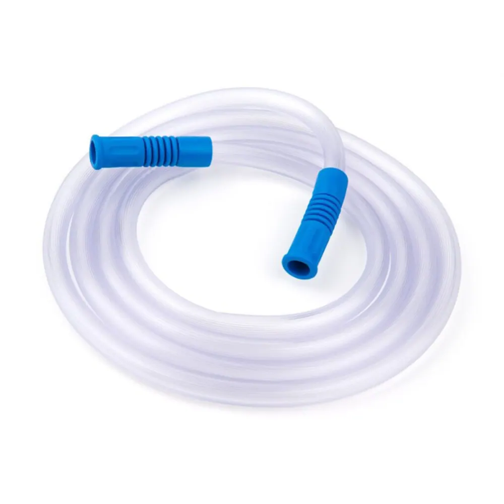
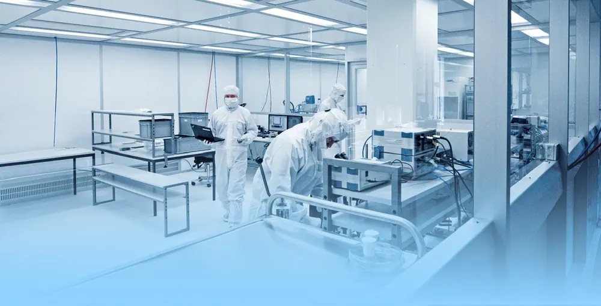

مقدمه
ساکشن تیوب یا لوله ساکشن یک لوله رابط پزشکی قابل انعطاف از جنس پلی وینیل کلراید (PVC) است که برای تخلیه خون و ترشحات از بدن بیمار به دستگاه ساکشن متصل می شود.
لوله ساکشن (ساکشن تیوب) آبادیس در در سه سایز 25(آبی)، 30(طوسی) و 35(مشکی) تولید می شود.
ساختار و عملکرد لوله ساکشن (ساکشن تیوب)
اجزای تشکیل دهنده لوله ساکشن:
ساکشن تیوب آبادیس یک وسیله پزشکی است که با ترکیب دقیق اجزاء مختلف، به تخلیه ترشحات از بدن کمک میکند. این وسیله از دو اجزاء اساسی تشکیل شده است:
- لوله ساکشن یا ساکشن تیوب از جنس سیلیکون شفاف و PVC پزشکی
- سر ساکشن یا رابط اتصال به دستگاه (شبیه به قیف و در دو سر لوله موجود است)
ترکیب این دو اجزاء اصلی، یعنی لوله شفاف و سر ساکشن، به تیم درمانی اجازه میدهد که بهطور دقیق و کارآمد ترشحات و مایعات را از بدن خارج کنند. این ساختار با کیفیت، به بهبود وضعیت بیماران در جریان مراقبتهای پزشکی بسیار کمک میکند.

کاربردهای لوله ساکشن (ساکشن تیوب)- استفاده از ساکشن تیوب آبادیس در جراحی ها
- استفاده از ساکشن تیوب آبادیس در واحد های اورژانسی و حوادث
- استفاده از ساکشن تیوب آبادیس در مراقبتهای تنفسی
- استفاده از ساکشن تیوب آبادیس در دندانپزشکی ها
اهمیت استفاده از لوله ساکشن (ساکشن تیوب)
- اطمینان از کیفیت مراقبت: استفاده از لوله ساکشن با کیفیت آبادیس سبب تخلیه ترشحات و مایعات بدن به بهترین شکل میشود که میتواند به بهبود سریعتر بیمار کمک کند.
- کاهش ریسک عفونت: عدم تخلیه ترشحات و مایعات مانند خون، مخاط و ادرار میتواند منجر به انباشت و رشد باکتریها و میکروبها شود که با عوارض جانبی مانند عفونتها و تشدید بیماریها همراه است.
- بهبود تنفس و عملکرد قلبی: وقتی که مجرای تنفسی یا قلبی با مایعات پر میشوند موجب اختلال در عملکرد قلب و ریه می گردد؛ به همین روی تخلیه این مواد از این مجاری با کمک لوله ساکشن با کیفیت آبادیس میتواند به بهبود تنفس و عملکرد قلبی کمک کند.
- افزایش کارایی در جراحیها: در جراحیها، استفاده از ساکشن تیوب با کیفیت آبادیس میتواند به افزایش دید جراح و تسهیل دسترسی به مناطق حساس جراحی کمک کند. این موضوع میتواند تأثیر مستقیمی بر نتیجه جراحی و بهبود بیمار داشته باشد.

مزایا و فواید لوله ساکشن (ساکشن تیوب)
۱. سرعت و کارایی در خارج کردن ترشحات از بدن
ساکشن تیوب یکی از وسایل پزشکی پرکاربرد است که به دلیل سرعت و کارایی خود در خالی کردن ترشحات و مایعات از بدن، در مراقبتهای پزشکی و جراحیها از اهمیت ویژهای برخوردار است. به طور کلی، لوله ساکشن آبادیس با ایجاد فشار و مکش مناسب، ترشحات را از بدن بیماران به سرعت و به شکل کامل خارج میکند. در ادامه، به برخی از عوامل مؤثر در سرعت و کارایی این وسیله پرداخته خواهد شد:
- قدرت مکش قابل تنظیم: برخی از لوله ساکشن ها دارای قدرت مکش قابل تنظیمی هستند که به تیم درمانی اجازه میدهد که قدرت مکش را با توجه به نیاز بیمار تنظیم کنند. این امکان کنترل دقیق قدرت مکش، به عملکرد سریعتر و کارآمدتر در خارج کردن مایعات و ترشحات از بدن کمک میکند.
- طراحی واکنشپذیر: لوله ساکشن ها بهطور دقیق طراحی شدهاند تا با تفاوت فشار و حجم، مایعات را از بدن جذب کنند. این واکنشپذیری به دقت بالا، باعث افزایش کارایی و سرعت در مراحل مکش میشود.
- قطر و طول لوله: قطر و طول لوله انعطافپذیر در ساکشن تیوب مهم است. لولههای بزرگتر میتوانند حجم بیشتری از مواد را به سرعت جذب کنند. همچنین، طول لوله میتواند به تیم درمانی اجازه دهد تا به مناطق دورتر از بدن دسترسی داشته باشند و به سرعت مخازن را خالی کنند.
- مکانیزمهای تخلیه سریع: برخی از لوله ساکشن ها دارای مکانیزمهای تخلیه سریع میباشند که به تیم درمانی امکان تخلیه مواد جذب شده را با سرعت بیشتری میدهد. این ویژگی به معنای کاهش زمان موردنیاز برای خالی کردن ترشحات از بدن است.
- تنوع نکات فنی: ساکشن تیوبها با تنوع نکات فنی مانند انواع نازلها، فیلترها و مکانیزمهای تمیز کردن میتوانند در مخازن بدن با ظروف و خصوصیات مختلف عملکرد کنند. این تنوع نکات فنی باعث افزایش کارایی و سرعت در ترشحات بدن میشود.
از این رو، لوله ساکشن آبادیس با توجه به این عوامل، به تیمهای درمانی امکان فرآیند سریع و کارآمد در خارج کردن ترشحات از بدن را میدهد. این ویژگیها به بهبود کیفیت مراقبتهای پزشکی و جلوگیری از عوارض جانبی کمک میکنند.
۲. کاهش ریسک انتقال عفونت
لوله ساکشن به عنوان یک وسیله پزشکی حیاتی، نقش مهمی در کاهش ریسک عفونت در مراقبتهای پزشکی و جراحیها ایفا میکند. از طریق اختصاصی و بهینهسازی شدن طراحی و کاربرد این وسیله، امکان تخلیه ترشحات مختلف از بدن به طور بهداشتی و بدون تلاش زیادی وجود دارد. در ادامه، به برخی از راهکارهایی که به کاهش ریسک عفونت و ترشحات توسط ساکشن تیوب کمک میکنند، پرداخته میشود:
- تخلیه بهداشتی بدن: لوله ساکشن آبادیس به تیم درمانی اجازه میدهد تا بهداشتی و با حداقل تماس مستقیم با ترشحات، بدن را تخلیه کنند. این عمل باعث کاهش اندازه ریسک عفونتها و انتقال میکروبها به تیم درمانی میشود.
- استفاده از انواع نازلها و فیلترها: ساکشن تیوب آبادیس میتوانند با انواع نازلها و فیلترهای مختلف مجهز شوند. این اجزاء به ترشحات مخرب و آلودگیها از دستگاه مکش جلوگیری میکنند و کیفیت هوا را که تیم درمانی تنفس میکند، بهبود میبخشند.
- استفاده از ساکشن تیوب یکبار مصرف: استفاده از لوله ساکشن یکبار مصرف آبادیس باعث اطمینان از تخلیه بهداشتی و عدم تماس مجدد با مواد آلوده میشود و ریسک انتقال عفونتها کاهش مییابد.
- آموزش به تیم درمانی: آموزش دقیق به تیم درمانی در مورد استفاده صحیح از لوله ساکشن و تجهیزات مرتبط باعث میشود که روشهای بهداشتی و کاهش ریسک را به طور کامل رعایت کنند.
- مانیتورینگ مستمر: مانیتورینگ مستمر از وضعیت دستگاه و تیم درمانی باعث میشود که هرگونه مشکل یا علائم اختلال در زمینه بهداشت و کاهش ریسک شناسایی و به سرعت رفع شود.
در نهایت، لوله ساکشن آبادیس با ترکیب تکنیکهای بهداشتی، استفاده از تجهیزات مناسب و آموزش مناسب به تیم درمانی، میتواند به کاهش ریسک عفونت و انتقال ترشحات در مراقبتهای پزشکی بسیار کمک کند و سلامت بیماران را حفظ کند.
اهمیت تخلیه ترشحات و خونابه ها از بدن بیماران
حفظ سلامت و بهبود وضعیت بیماران، از اهمیت بالایی در حوزه پزشکی برخوردار است و یکی از عوامل کلیدی در این زمینه، تخلیه صحیح ترشحات از بدن بیماران می باشد. از این رو، استفاده از تجهیزات پزشکی مانند لوله ساکشن که بتوانند به بهبود وضعیت بیماران کمک کنند، از اهمیت ویژه ای برخوردار است. در ادامه به برخی از دلایل اهمیت تخلیه ترشحات و خونابه ها از بدن بیماران با استفاده از ساکشن تیوب آبادیس پرداخته میشود:
- پیشگیری از تشدید بیماریها: در بسیاری از بیماریها، مجاری داخلی بدن، نقش محیط مناسبی برای رشد و تکثیر باکتریها و میکروبها ایفا میکنند. با تخلیه ترشحات مانند خون، مخاط و ادرار از این مجاری، خطر انباشت باکتریها و افزایش تشدید بیماریها کاهش مییابد.
- کاهش خطر عفونتها: مجاری داخل بدن میتوانند به یک محیط مناسب برای گسترش عفونتها تبدیل شوند. تخلیه این مجاری توسط ساکشن تیوب، ریسک عفونتها بهطور چشمگیری کاهش مییابد.
- بهبود پاسخ به درمان: در مواردی مانند جراحیها، تراپیهای دارویی و درمانهای متعدد، تخلیه ترشحات بدن باعث افزایش کارایی و پاسخ به درمان میشود.
- حفظ راحتی بیمار: بیماران در مواقع بحرانی یا پس از عمل جراحی، ممکن است به تخلیه مجاری بدن خود نتوانند اهمیت کافی بدهند. استفاده از ساکشن تیوب آبادیس به تیم درمانی کمک میکند تا بهبود سریعتر و راحتتری را برای بیمار فراهم کند.
محدودیتها و نکات آگاهی لازم
استفاده بهینه از ساکشن تیوب در مراقبتهای پزشکی بسیار مهم است تا عملکرد درست این وسیله تضمین شود و همچنین خطرات مرتبط با نادرستی در استفاده از آن کاهش یابد. در ادامه، به چند نکته کلیدی برای استفاده بهینه از لوله ساکشن آبادیس اشاره میکنیم:
- آموزش مناسب: کارکنان پزشکی و مراقبتی باید آموزشهای لازم را درباره استفاده درست از ساکشن تیوب آبادیس دریافت کنند. آموزشها باید شامل راهنماییهای کاربردی، بهداشت دستها، تعویض فیلترها و موارد مشابه باشد.
- استریلیته و بهداشت دستها: همواره قبل از استفاده از لوله ساکشن، دستها بهدرستی شسته و ضدعفونی شوند و از دستکشهای مناسب استفاده شود تا بهداشتی کامل حفظ شود.
- انتخاب متناسب با بیمار: انتخاب سایز مناسب لوله ساکشن براساس ویژگیهای بیمار و وضعیت تنفسی ضروری است تا عملکرد بهینه و جلوگیری از آسیب به راههای تنفسی حاصل شود.
- استفاده از فیلترها: از فیلترهای مناسب در واحد لوله ساکشن استفاده کنید تا ترشحات و مایعات آلوده به دستگاه ساکشن نرسند و از عفونت و آلودگی جلوگیری شود.
- تعویض و تمیزکاری دقیق: پس از هر استفاده، لوله ساکشن و تجهیزات مرتبط باید بهدرستی تعویض و تمیزکاری شوند تا عفونتها و آلودگیها کاهش یابند.
- کنترل فشار و میزان مکش: از فشار مناسب در حین استفاده از لوله ساکشن اطمینان حاصل کنید تا از آسیب به بافتها جلوگیری شود و به بیمار صدمه نرسد.
- زمان استفاده کوتاه: استفاده از لوله ساکشن را به مدت زمان کوتاه و مناسب محدود کنید تا از خشک شدن مخازن تنفسی و تهویه ناکافی جلوگیری شود.
- مشاهده نشانههای عارضه: در صورتی که بیمار نشانههای عارضه مانند تغییر رنگ یا مشکل در تنفس نشان دهد، فوراً اقدامات لازم را انجام دهید.
- انجام تنظیمات مناسب: در ساکشن تیوب، تنظیمات فشار و میزان مکش باید با توجه به نیاز بیمار تعیین شود و با دقت انجام گیرد.
استفاده از لوله ساکشن آبادیس نیازمند دقت، آگاهی و آموزش مناسب است. با رعایت نکات فوق، میتوان بهبود مراقبتهای تنفسی و کاهش خطرات مرتبط با استفاده نادرست از این وسیله را تضمین کرد.
شرایط تولید لوله ساکشن (ساکشن تیوب)
تولید یک لوله ساکشن با کیفیت مانند ساکشن تیوب آبادیس نیازمند رعایت استانداردها و ایجاد معیارهای دقیقی در کارخانه است. در زیر، به برخی از معیارهای اصلی که باید در کارخانه ایجاد شوند تا بتوان لوله ساکشن با کیفیت تولید کرد، اشاره می شود:
- استفاده از مواد با کیفیت: مواد اولیه باید با کیفیت بالا و استاندارد باشند و باید مطابق با مقررات بهداشتی و معیارهای بینالمللی انتخاب شوند.
- فرآیند تولید: ایجاد روشهای تولید بهینه و با کیفیت بالا از جمله موارد حیاتی در تولید لوله ساکشن است. فرآیندهای تولید باید با دقت و استفاده از تجهیزات مناسب انجام شود.
- فناوری و تجهیزات مدرن: کارخانه باید از تجهیزات و فناوریهای مدرن برای تولید و کنترل کیفیت محصولات استفاده کند تا محصولات با کیفیت و بهداشتی تولید شوند.
- سیستم کنترل کیفیت: کارخانه باید دارای سیستم کنترل کیفیت منسجم و دقیق باشد که در تمام مراحل تولید، از مواد اولیه تا محصول نهایی، کیفیت محصول را تضمین کند.
- رعایت استانداردها: کارخانه باید به رعایت استانداردهای ملی و بینالمللی مربوط به تولید محصولات پزشکی مانند استانداردهای سازمان غذا و دارو و ISO پایبند باشد.
- آزمون و ارزیابی: انجام آزمونها و ارزیابیهای مختلف بر روی محصول نهایی، از جمله معیارهایی است که به اطمینان از کیفیت ساکشن تیوبها کمک میکند.
- آموزش و توانمندسازی کارکنان: کارخانه باید برنامههای آموزشی مناسب برای کارکنان خود داشته باشد تا آنها به روزرسانیهای مربوط به فناوری و استانداردهای کیفیت بتوانند پیگیری کنند.
- پایداری و حفظ محیط زیست: کارخانه باید از روشها و فرآیندهای سازگار با محیط زیست استفاده کند و به پایداری محیط زیست توجه کند.
- بهبود مداوم: ایجاد فرآیندهای بهبود مداوم و پیگیری از بازخوردهای مشتریان و بازار به کمک به بهبود کیفیت محصولات میشود.
- تولید ساکشن تیوب در اتاق تمیز ( Clean Room): Clean Room یا اتاق تمیز در محیطهای تولیدی محصولات پزشکی و فارماسوتیکال دارای اهمیت بسیاری است. این اتاقها به منظور کاهش ذرات معلق، باکتریها، و ویروسها در هوا و اطمینان از شرایط بهداشتی و تمیز بودن فضا ایجاد میشوند. برخی از اهمیتهای Clean Room آبادیس در تولید لوله ساکشن آبادیس عبارتند از:
- حفظ کیفیت محصولات: حضور ذرات معلق و میکروبها میتواند به کاهش کیفیت محصولات و حتی ایجاد خطرات برای سلامتی بیماران منجر شود. استفاده از Clean Room باعث میشود که محیط تولیدی از ذرات معلق و میکروبها پاک شده و محصولات با کیفیت و بی خطر تولید شوند.
- پیشگیری از آلودگی: در تولید محصولات پزشکی، حتی یک ذره کوچک هم میتواند به آلودگی محصول منجر شود. Clean Room با ایجاد یک محیط کنترل شده و تمیز، از آلودگی محصولات جلوگیری میکند.
- رعایت استانداردها: استفاده از Clean Room باعث رعایت استانداردهای بهداشتی و کیفیتی مربوط به تولید محصولات پزشکی میشود، که این امر برای تأیید صلاحیت و تاییدیههای لازم از نهادهای مربوطه ضروری است.
- افزایش اعتماد مشتریان: وجود یک Clean Room در کارخانه، به مشتریان نشان میدهد که شرکت سازنده محصولات خود را به استانداردهای بالایی از بهداشت و کیفیت ملزم میداند و این موضوع باعث افزایش اعتماد آنها به محصولات میشود.
این ویژگیها و استانداردها از مهمترین عواملی هستند که کارخانههای تولید ساکشن تیوب باید رعایت کنند تا بتوانند محصولات با کیفیت و ایمنی مطلوب تولید کنند.

ارزیابی کیفیت لوله ساکشن (ساکشن تیوب) پس از تولید
برای ارزیابی کیفیت یک لوله ساکشن خریداری شده، میتوانید به موارد زیر توجه کنید:
- بررسی برچسبها و استانداردها: برچسب محصول باید شامل اطلاعاتی مانند نام تولید کننده، شماره تماس، تاریخ تولید، شماره دستیابی و استانداردهایی که محصول مطابقت دارد، باشد. اطمینان حاصل کنید که محصول شما با استانداردهای معتبری همچون سازمان غذا و دارو مطابقت دارد.
- بررسی مواد استفاده شده: موادی که در تولید ساکشن تیوب استفاده شده است، بسیار مهم هستند. اطمینان حاصل کنید که مواد با کیفیت و بهداشتی استفاده شده اند.
- کنترل کیفیت: بررسی بستهبندی و شکل ظاهری ساکشن تیوب و اطمینان از عدم وجود هرگونه نقص یا آسیب میتواند نشانگر کنترل کیفیت مناسب در فرآیند تولید باشد.
- بررسی بازخورد مشتریان: بررسی نظرات و بازخوردهای مشتریانی که قبلاً از همین محصول استفاده کردهاند، میتواند به شما کمک کند تا درباره کیفیت محصول اطلاعات بیشتری کسب کنید.
- ضمانت و گارانتی: اطمینان حاصل کنید که محصول دارای ضمانت کیفیت و گارانتی معتبری است. این امر نشانگر اعتماد تولید کننده به کیفیت محصول است.
- اطمینان از استریل بودن ساکشن تیوب با گاز اتیلن اکساید: لوله ساکشن پس از تولید باید با گاز اتیلن اکساید استریل گردد.
با توجه به این موارد و ارزیابی دقیق محصول، میتوانید بهترین تصمیم را در خرید لوله ساکشن (ساکشن تیوب) با کیفیت بگیرید. همچنین، انتخاب فروشندگان معتبر و قابل اعتماد نظیر آبادیس نیز میتواند به اطمینان شما از کیفیت محصول کمک کند.
نتیجهگیری
لوله ساکشن به عنوان یک ابزار پزشکی اساسی، نقش بسیار مهمی در بهبود کیفیت مراقبتهای پزشکی ایفا میکند. این وسیله با تخلیه ترشحات و مایعات در حین جراحی ها و مسیرهای تنفسی بیماران، به تهویه مناسب، جلوگیری از خطرات انسدادی و عفونتی و بهبود بیماران کمک میکند.